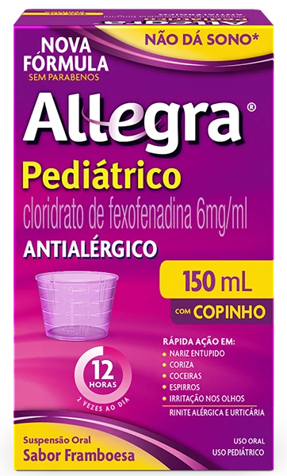

Alergia
Atualizações científicas sobre rinite alérgica e manejo clínico.
Acesso principal
Solicitado pela Opella e desenvolvido pela Medscape.
Health. In your hands.
Explore um hub científico com evidências, insights clínicos e ferramentas práticas nas áreas de dor, alergia e saúde digestiva, desenvolvido para apoiar decisões mais adequadas no cuidado ao paciente.
Conteúdo científico especializado para apoiar sua prática clínica.
Atualizações científicas sobre rinite alérgica e manejo clínico.
Acesso principal
Equilíbrio da Flora Intestinal.
Acesso principal
Informações científicas sobre cálcio e vitamina D.
Acesso principal
Conteúdo sobre manejo da dor e febre.
Acesso principal
Conteúdo científico especializado para apoiar sua prática clínica.
Sociedade Brasileira de Pediatria
Departamento Científico de Alergia
Nº 205, 13 de Maio de 2025
Há dezenas de formulações de anti-histamínicos (AH) anti-H1 disponíveis no mundo para o tratamento da rinite alérgica (RA) e urticária crônica (UC), incluindo formulações sistêmicas e tópicas.
Ver mais → sobre anti-histamínicos em doenças alérgicasSociedade Brasileira de Pediatria
Departamento Científico de Alergia
Nº 213, 13 de Junho de 2025
O microbioma humano desempenha um papel essencial na proteção do hospedeiro e no desenvolvimento de um sistema imunológico equilibrado.
Ver mais → sobre uso de probióticos em criançasSociedade Brasileira de Pediatria
Departamentos Científicos de Pediatria Ambulatorial e Infectologia
Nº 206, 15 de Maio de 2025
A febre representa uma das queixas mais frequentes nos atendimentos pediátricos, tanto em consultas ambulatoriais como em atendimentos de emergência.
Ver mais → sobre abordagem da febre aguda em pediatria14
conteúdos científicos
Artigos, videos, infográficos e casos clínicos.
+4
especialistas
Nacionais
4
áreas terapêuticas
Alergia, Saúde Digestiva, Saúde Óssea e Dor e Febre.
Atualização
contínua
Conteúdo novo toda semana.

Atualização SBP: Fexofenadina não impacta funções cognitivas e desempenho psicomotor.1
Saiba maisALLEGRA® (cloridrato de fexofenadina). Indicações: é um anti-histamínico destinado ao tratamento das manifestações alérgicas, tais como sintomas de rinite alérgica (incluindo espirros, obstrução nasal, prurido, coriza, conjuntivite alérgica) e urticária (erupção avermelhada e pruriginosa na pele).
ALLEGRA® (cloridrato de fexofenadina). Indicações: é um anti-histamínico destinado ao tratamento das manifestações alérgicas, tais como sintomas de rinite alérgica (incluindo espirros, obstrução nasal, prurido, coriza, conjuntivite alérgica) e urticária (erupção avermelhada e pruriginosa na pele). MS: 1.8620.0010. O USO DO MEDICAMENTO PODE TRAZER ALGUNS RISCOS. Leia atentamente a bula. SE PERSISTIREM OS SINTOMAS, O MÉDICO DEVERÁ SER CONSULTADO.
ENTEROGERMINA® – Não contém glúten.
NOVALGINA® (dipirona monoidratada). Indicação: analgésico e antitérmico. MS 1.8620.0018. O USO DO MEDICAMENTO PODE TRAZER ALGUNS RISCOS. Leia atentamente a bula. SE PERSISTIREM OS SINTOMAS, O MÉDICO DEVERÁ SER CONSULTADO.
OS-CAL® Cálcio – Contém glúten.
TARGIFOR® Te ajuda! Stress – Não contém glúten.
DULCOLAX® (bisacodil). Indicação: casos de constipação intestinal, no preparo para procedimentos diagnósticos, no pré e pós-operatório e em condições que exigem uma evacuação facilitada. MS 1.8620.0020.
NOVALGINA® (dipirona monoidratada). Indicação: analgésico e antitérmico. MS 1.8620.0018. O USO DO MEDICAMENTO PODE TRAZER ALGUNS RISCOS. Leia atentamente a bula. SE PERSISTIREM OS SINTOMAS, O MÉDICO DEVERÁ SER CONSULTADO. MAT-BR-XXXXX-1.0-XX/2026.